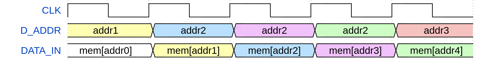
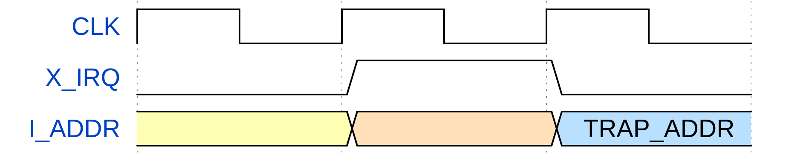

Instruction fetch
To fetch an instruction, the core places the instruction address on the I_ADDR bus. The memory must place the instruction on the INSTR bus at the next clock rising edge. The figure below shows the timing diagram of this process. In the figure, mem[addrX] denotes the instruction stored at the memory position addrX.

Data fetch
To fetch data from memory, the core puts the data address on the D_ADDR bus. The memory must place the data on the DATA_IN bus at the next clock rising edge. The figure below shows the timing diagram of this process. In the figure, mem[addrX] denotes the data stored at the memory position addrX.

Data writing
To write data to memory, the core drives the D_ADDR, DATA_OUT, WR_REQ and WR_MASK signals as follows:
- D_ADDR holds the address of the memory position where the data must be written;
- DATA_OUT holds the data to be written;
- WR_REQ is set high;
- WR_MASK holds a byte-write enable mask that indicates which bytes of DATA_OUT must be written.
The memory must perform the write operation at the next clock rising edge. The core can request to write bytes, halfwords and words.
The figure below shows the process of writing data to memory. The DATA_IN bus is not used in the process and appears only to show the memory contents after writing. The figure shows five clock cycles, in which the core requests to write in the second, third and fourth cycles. In the second clock cycle, the core requests to write the word 0x12345678 at the address addr2. In the third, requests to write the halfword 0xABCD at the upper half of addr2, and in the fourth requests to write the byte 0xEF at the second least significant byte of addr2. The value stored at addr2 after each of these operations appears on DATA_IN bus and are highlighted in blue.

Interrupt request
An external device (or an interrupt controller managing interrupt requests from several devices) can request interrupts by setting high the appropriate IRQ signal, which is E_IRQ for external interrupts, T_IRQ for timer interrupts and S_IRQ for software interrupts. The IRQ signal of the requested interrupt must be set high for one clock cycle and set low for the next.
The figure below shows the timing diagram of the interrupt request process. Since the process is the same for all types of interrupt, X_IRQ is used to denote E_IRQ, T_IRQ or S_IRQ. TRAP_ADDR denotes the address of the trap handler first instruction.

Time CSR update
When connected to a real-time counter, the core updates the time CSR (Control and Status Register) with the value put on the REAL_TIME bus at each clock rising edge, as shown in the figure below. timeX denotes arbitrary time values.